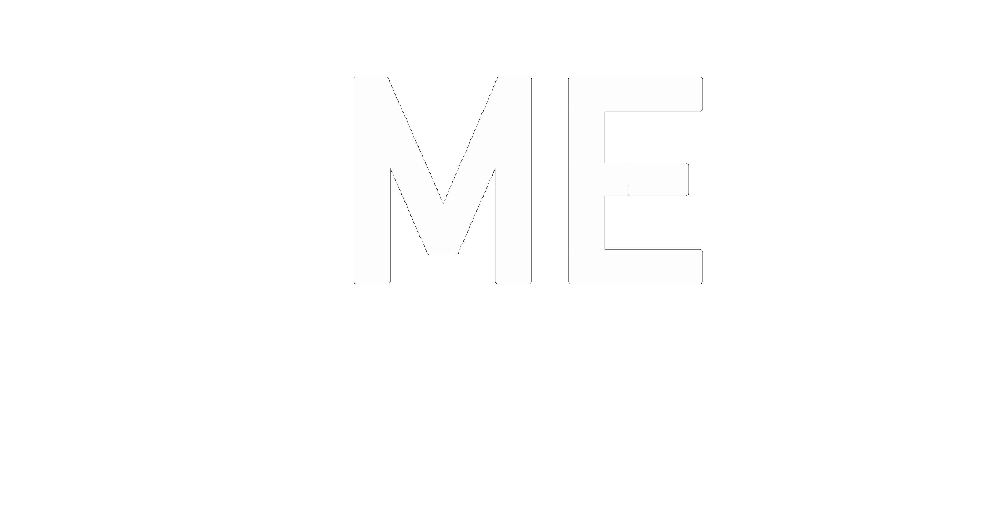
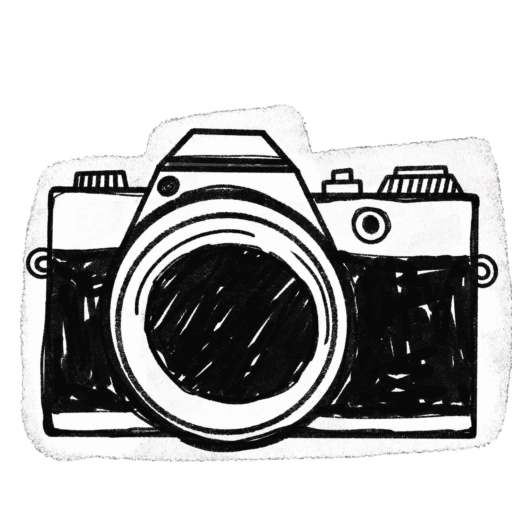

I turn creativity into structure
and structure into experiences
that stay with you
and structure into experiences
that stay with you
2026

I’m Hanna Begic.
Over the past year, I’ve been developing my technical skills by working with programming languages such as JavaScript, HTML, CSS, and C++. I enjoy building things from the ground up and combining logical problem-solving with creative expression, often integrating artistic elements into my projects including this website itself to create thoughtful and meaningful experiences.
I grew up in Austria and moved to Switzerland two years ago, a change that helped shape my perspective and independence.
On a personal level, I tend to open up gradually and can be reserved at first, which I see as both a challenge and a strength. While I may not always be the most outspoken in the beginning, I am observant, focused, and attentive to details.



Once I feel comfortable, I become engaged, motivated, and confident in sharing ideas and taking responsibility.
• creative thinking and a strong sense for design • dedication, focus, and attention to detail • a willingness to learn and grow through new challenges • reliability and commitment to doing my best work
I’m excited to gain experience in a supportive, collaborative environment where I can continue developing both personally and professionally.
curious, creating, becoming